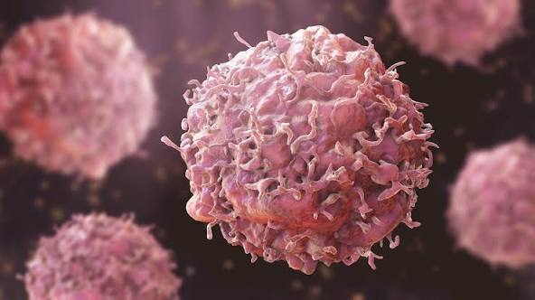

Oncology: Pathophysiology of Cancer
Definition and Pathophysiology
Cancer is a large group of diseases characterized by the uncontrolled proliferation of abnormal cells that extend beyond their usual boundaries. This process, known as neoplasia, involves the loss of normal cell cycle regulation, primarily driven by mutations in proto-oncogenes and tumor suppressor genes. These cellular aberrations allow cells to evade programmed cell death (apoptosis) and initiate angiogenesis to sustain rapid growth.
Etiology and Causative Factors
The etiology of carcinogenesis is multifactorial, involving an interaction between genetic susceptibility and external agents. These include physical carcinogens (ultraviolet and ionizing radiation), chemical carcinogens (asbestos, tobacco smoke components, aflatoxin), and biological carcinogens (infections from certain viruses, bacteria, or parasites).
Classification and Types
- Carcinomas: Originating in epithelial tissues (Lung, Breast, Prostate).
- Sarcomas: Originating in mesenchymal tissues (Bone, Cartilage, Fat).
- Leukemias: Originating in blood-forming tissues (Bone marrow).
- Lymphomas: Originating in the immune system cells.
Prominent Clinical Dimensions
1. Survival Statistics
Analysis of five-year relative survival rates based on clinical staging (Localized, Regional, and Distant metastasis).
2. Genetic Risk Factors
Identification of hereditary mutations, such as BRCA1 and BRCA2, that significantly elevate susceptibility to specific malignancies.
3. Diagnostic Procedures
Utilization of high-resolution computed tomography (CT), magnetic resonance imaging (MRI), and histopathological biopsy for definitive diagnosis.
4. Treatment Modalities
Integration of chemotherapy, radiotherapy, immunotherapy, and precision targeted molecular therapy based on the tumor profile.
5. Preventive Measures
Implementation of primary prevention strategies including tobacco cessation, vaccination (HPV/Hepatitis B), and routine clinical screenings.